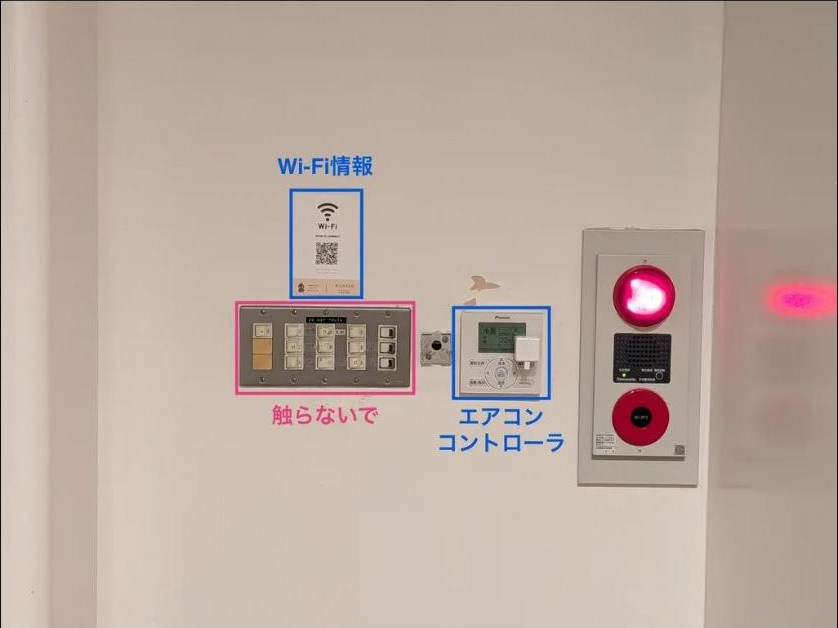

ご利用ガイド
ご予約確定後から当日のご利用、退出までに必要な内容をまとめています。
1. 注意事項
- 1日単位でのご予約は、搬入・設営、片付け、退出を含めて10:00〜22:00です。
- 退出時間が遅れた場合は追加料金を頂く場合がございます
- 施設内での喫煙NG（電子タバコを含む）
- 屋外の喫煙スペースをご利用ください。
- 近隣の迷惑となる過度な騒音・振動NG
- 施設内の設備や家具は丁寧にお取り扱いください。
- 特に家具を移動する際は、引きずらず、持ち上げて移動してください。
- 壁や備品へ粘着テープ等を直接貼らないでください。
- 塗装が剥がれるので、マスキングテープ等の低粘着のテープで下地を作り、その上から貼るようにお願いします。
- お申し込み内容と異なる利用
- お申し込み内容と実際の利用内容が異なる場合や、審査基準に該当すると運営が判断した場合は、当日であっても利用を中止し、退出していただくことがあります。その場合、ご利用料金は返金いたしかねます。
2. 当日のご利用
入室
入室時間にスタッフが立ち会いますので、事前に入室予定時間をお知らせの上、現地の1Fにいるスタッフへお声がけください。
照明、エアコン、Wi-Fi

- 照明はスマートフォンのTuyaというアプリでコントロールできます。スマートフォンを貸し出しますのでそちらをご利用ください。壁のスイッチは触らないでください。
- エアコン操作は画像に示すコントローラーをお使いください。利用後はスイッチOFFをお願いします。
- Wi-Fi情報は画像に示す場所に掲示しております。
トイレ
1Fのパブにある男女兼用トイレをご利用ください。
片付け
次の方が気持ちよく使えるよう、ご利用後は以下の通り片付けをお願いします。片付けもご利用時間に含まれます。
※ゴミ袋、ウェットティッシュは施設のものをご利用いただけますが、持ち帰らないようにお願いします。
簡易清掃
- ゴミ拾い、掃除機での床清掃（掃除機は貸し出ししますのでスタッフにお声がけください）
- ウェットティッシュによる、床、テーブル類の汚れ拭き取り
ゴミ分別
以下のゴミは現地で処分できます。施設で用意するゴミ袋を使用し、指定の分別を厳守してください。記載のないゴミはお持ち帰りください。
- 燃えるゴミ：生ゴミ、紙くずなど
- ビン・缶・ペットボトル
- ビン、缶、ペットボトルは同じ袋にまとめて構いません。
- ペットボトルはキャップとフィルムを外し、キャップとフィルムは燃えるゴミへ入れてください。
- ダンボール
- 潰して重ね、ひとまとめにしてください。
分別方法が不明な場合は、スタッフへお声がけください。